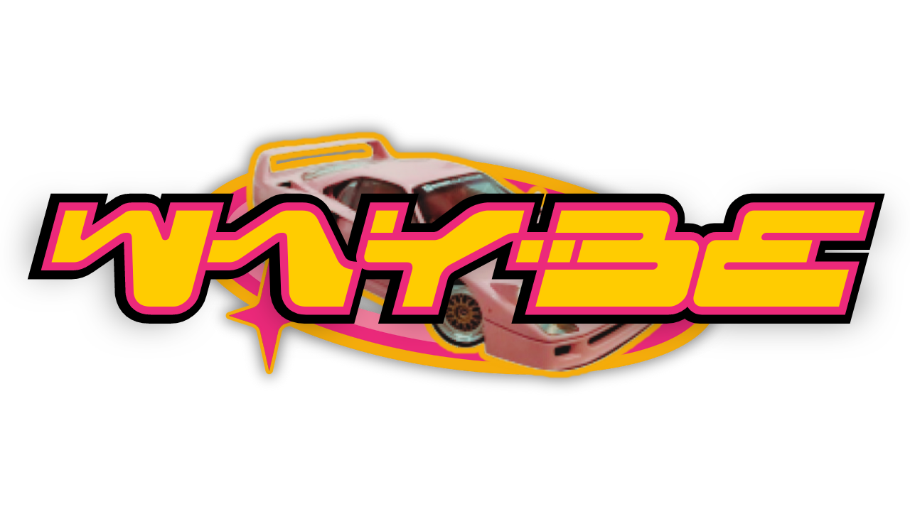
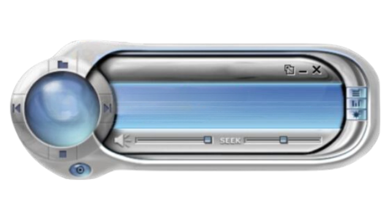
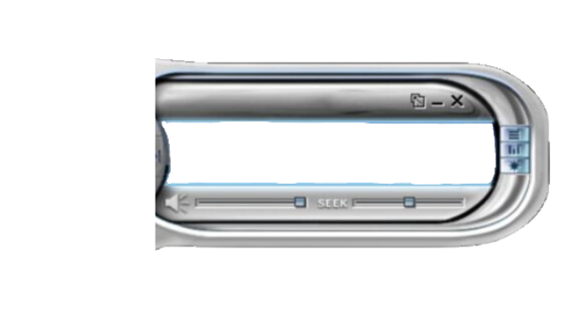

Game
Game

Démo static · Bac 1 UCLouvain
Mobilité belge,
Mobilité belge,
mode Y2K
Projet Bac 1 · data mobilité · memory rétro · groupe C02, EPL UCLouvain.
Radio Y2K
Lecteur rétro — la piste complète est dans la version Flask du repo.


// Ayesha x Righteous